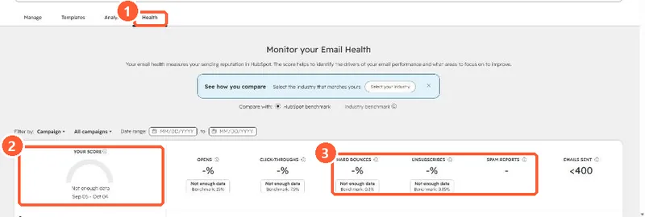

Short answer
Start with the basics HubSpot lists: connect and authenticate your email sending domain, then look at engagement. Mailbox providers move low-engagement email to spam, which lowers opens further. Clean out unengaged and bounced contacts, never send to bought or scraped lists (they can contain spam traps), and watch the Health tab for hard bounces and spam reports. Professional and Enterprise add time-zone sending and A/B testing.
1. The Health tab
My demo portal has sent too little for a score, but the tab shows the measures that matter: opens, click-throughs, hard bounces, unsubscribes and spam reports.


2. The checklist
- Sending domain connected with SPF and DKIM. See connecting a sending domain.
- Bounced contacts excluded. See bounced contacts still marketing.
- Unengaged contacts suppressed or sent a re-engagement email first.
- No purchased or scraped lists. HubSpot quarantines segments that hit spam traps.
- Send frequency kept reasonable. See frequency caps.
3. If it keeps happening
HubSpot says sustained low open rates are a sign emails are going to spam and that a reputation repair plan may be needed. Repeated bounces and spam reports can lead to a sending suspension.